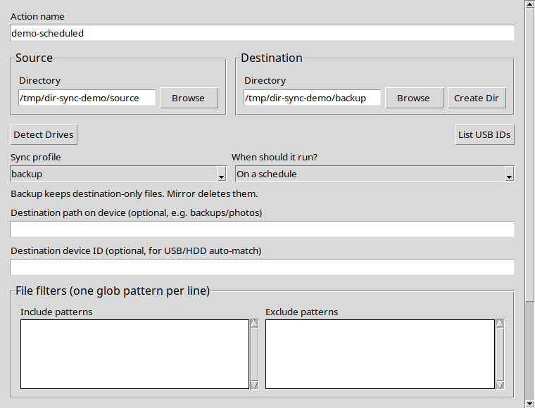

Safe direction · Clear control
Keep important folders in sync without guessing what will change.
Dir Sync is a desktop tray app for previewing, scheduling, and running one-way directory backups to local folders, network locations, and removable drives.
Start with Preview only. It is enabled by default and shows what a run would copy or remove before any real files change.

One-way backup
Copies source changes to the destination while keeping destination-only files.
One-way mirror
Makes the destination match the source, including removal of destination-only files.
Local schedules
Use readable daily, weekly, monthly, or minute-based schedules; advanced cron remains available.
Current scope
Dir Sync currently maintains live folders. Timestamped Zstandard archives and conflict-safe two-way synchronization are planned features, not current behavior.